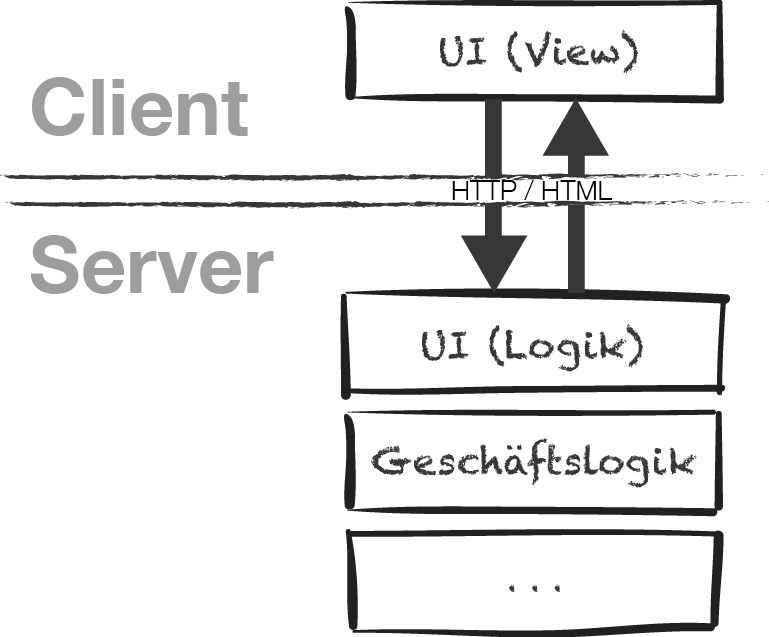
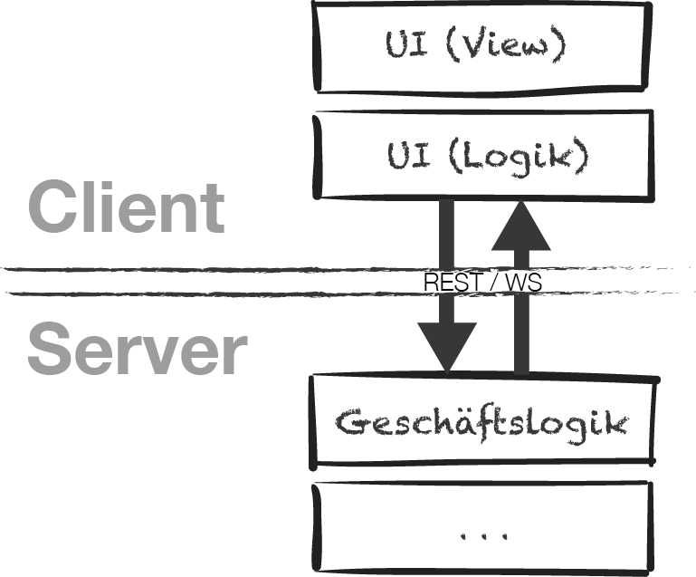
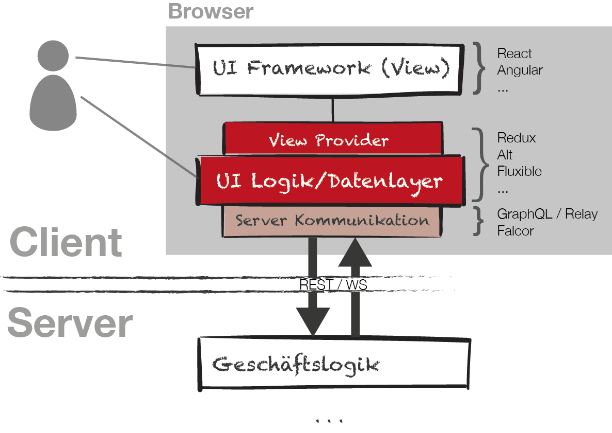
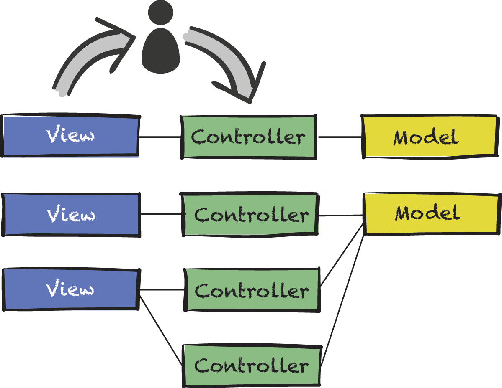
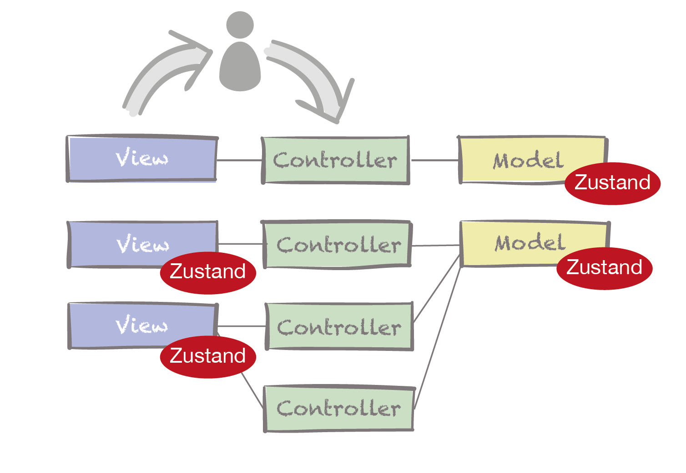
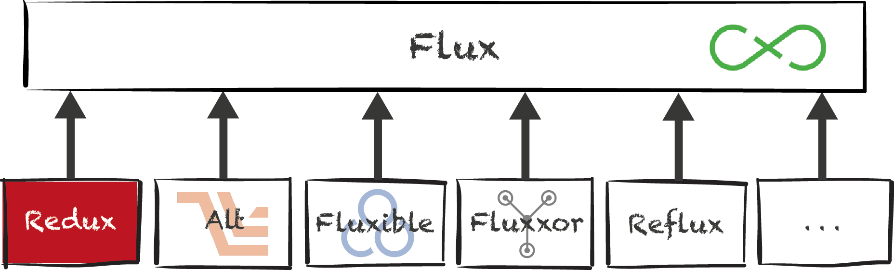
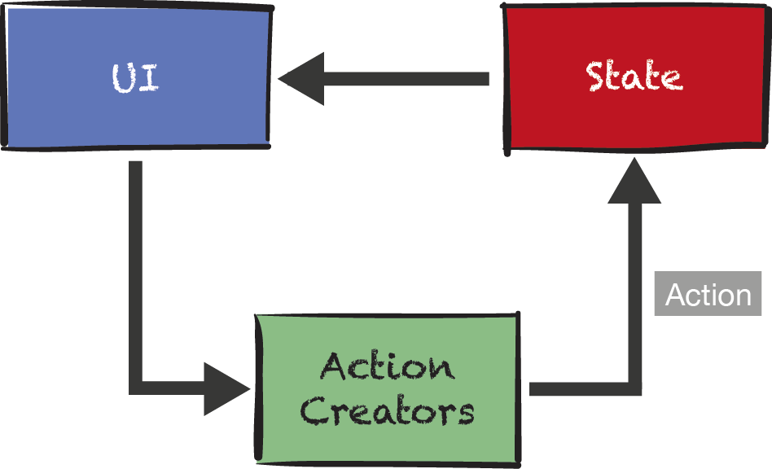
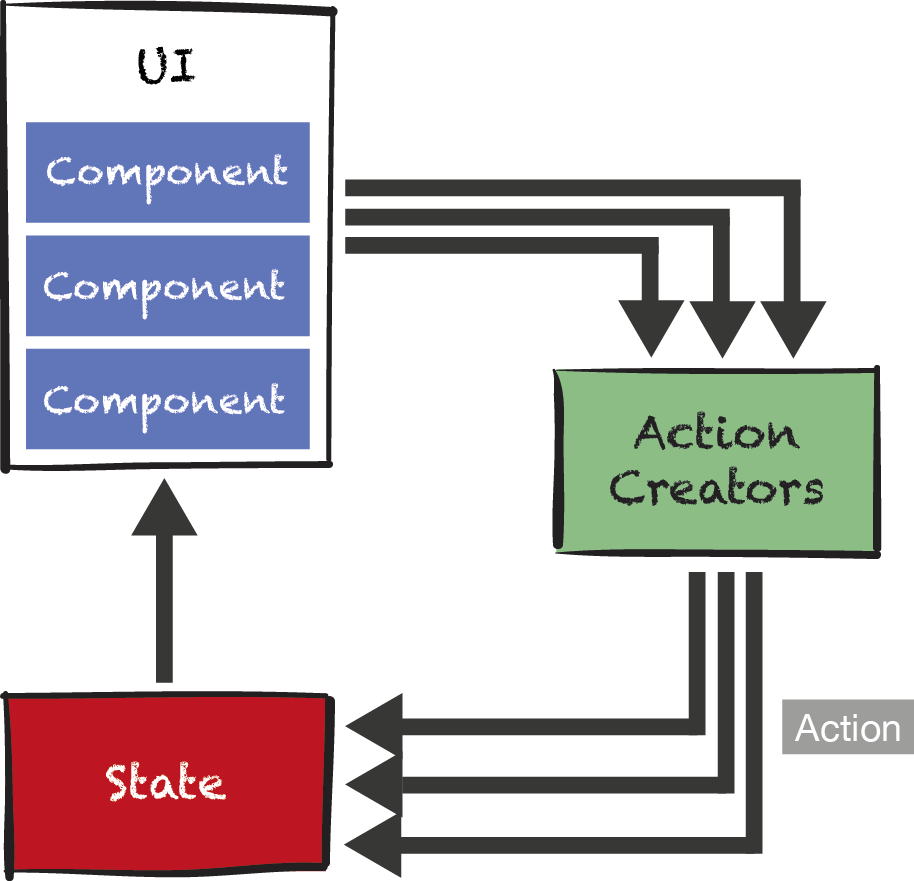
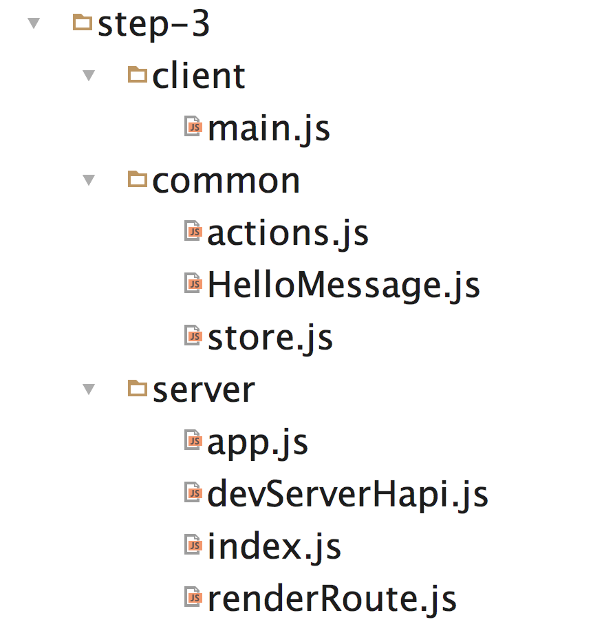
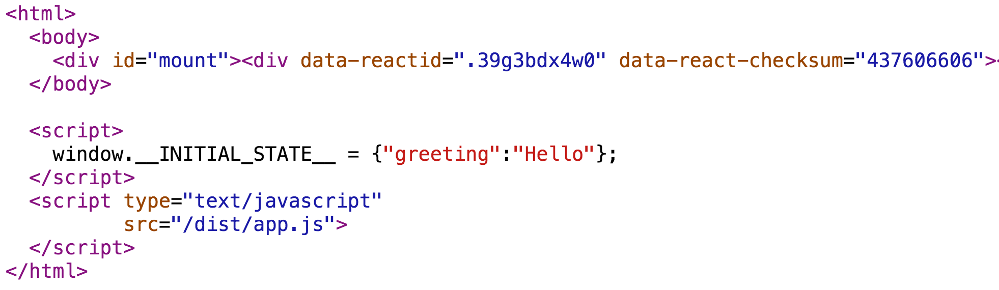

Universal Web Apps mit React und Redux
md-devdays.de 2016
Oliver Zeigermann / @DJCordhose
http://djcordhose.github.io/react-intro-live-coding/2016_md_devdays.html


Teil I
Was ist eine Single-Page-Applikation?
... und warum möchte ich eine haben
Klassiche Webanwendung
Copyright 2016, embarc
Single-Page Applications (SPAs) verschieben eure Anwendung in den Browser
- UI/UX in klassischen Webanwendungen ist grunsätzlich eingeschränkt
- Request-/Response-Zyklus limitiert die Anwendung
- Nutzer erwartet Bedienbarkeit wie im Desktop
- klassische Webanwendung in seiner Reinform längst so gut wie ausgestorben
- selbst in vermeintlich klassischen Anwendungen verstecken sich SPAs oft als Teile
- z.B. JSF Komponenten mit einem komplexen UI
Single-Page Application
Copyright 2016, embarc
Teil II
SPA mit React und Redux
React
- Framework für Facebook und viele andere
- Komponenten kapseln Template und Logik
- Minimales API
- Templates sind JavaScript plus HTML artige JSX-Syntax
- Ein-Weg-Data-Binding: Zustandsänderungen stellen Komponente neu dar
- Kann im Browser und auf dem Server rendern
- viel Inspiration aus der funktionalen Ecke (Immutable, pure functions, stateless)
Hello World React
class HelloMessage extends React.Component {
render() {
return
<input value={this.state.greeting} ref="in"
onChange={(event) => this.updateModel(event)} />
{this.state.greeting}, World
<button onClick={() => this.reset()}>Clear</button>
;
} constructor(props) {
this.state = {greeting: this.props.greeting};
}
updateModel(event) {
this.setState({greeting: event.target.value});
}
reset() {
this.setState({greeting: ""});
this.refs.in.focus();
}
}React in der Praxis
- React wird meist mit anderen Tools und Techniken zusammen eingesetzt
- React-Router: Was wird bei welcher URL dargestellt?
- Build
- Babel: Übersetzer
- Webpack: Bundler
- Flow: Statischer Type Checker
- Architektur-Muster
- Flux: UI-Architektur-Muster
- Universal Rendering: Server- und Client-Rendering kombiniert
Flux

Copyright 2016, embarc
Motivation
Problem von MVC mit Observer-Pattern

Copyright 2016, embarc
Problem von MVC mit Observer-Pattern

Copyright 2016, embarc
Verteilter, veränderlicher Zustand mit Listenern (Observer)

Redux

Copyright 2016, embarc
Redux-Grundidee #1: Fluss in eine Richtung

Copyright 2016, embarc
Redux-Grundidee #2: Zentraler Zustand

Copyright 2016, embarc
Teil III
Universal Rendering
Probleme von Single-Page Applications
- SEO
- First-Page-Impressions
- Statisches Rendering für Social Media etc.
- Progressive Enhancement
Universal Rendering mit React
- First-Page-Impression wird auf dem Server gerendert
- Links werden als normale HTML-Links in die Seite gerendert
- Beliebig viele andere Links werden ebenfalls statisch gerendert
- Läuft dann (zumindest zum Teil) auch ohne JavaScript
- Links typischerweise über Router
- Code fast 100% geteilt zwischen Client und Server
Code Sharing

Demo: Universal Rendering
Alles total einfach, also???
Leider nicht ganz
Wie transferieren wir den Zustand vom Server zum Client?
<!-- server -->
<html>
<body>
<div id="mount">${html}</div>
</body>
<script>
window.__INITIAL_STATE__ = ${JSON.stringify(initialData)};
</script>
</html>
// server: redux offers complete state from single store
const html = ReatDom.renderToString(...);
reply(renderFullPage(html, store.getState()));
// client: init store from complete state
const initialState = window.__INITIAL_STATE__;
const store = createStore(..., initialState);
Wie unterdrücken wir ein Re-Rendering auf dem Client?

Wenn Checksummen auf Server- und Client-Seite übereinstimmen wird nicht neu gerendert
Weitere Herausforderungen
- Aller Zustand muss beim serverseitigen Rendering komplett vorliegen
- Integration mit Router
- Unterschiedliche Locals auf Server und Client
- Zeitliche veränderliche Daten (Timestamp, Börsenkurs)
Zusammenfassung
- Single-Page Applications erlauben bestes UX
- Klassische Web-Apps erlauben serverseitiges Rendering
- Universal Web Apps verbinden die Fähigkeiten der beiden
- React mit Redux sind ideal für Universal Rendering
- React-Komponeten können auf dem Client und dem Server gerendert werden
- Checksummen erlauben ideal Weiterverarbeitung von Vorgerendertem
- Redux hält zentralen Zustand der leicht tranferiert werden kann
Vielen Dank!
Fragen / Diskussion
Oliver Zeigermann / @DJCordhose